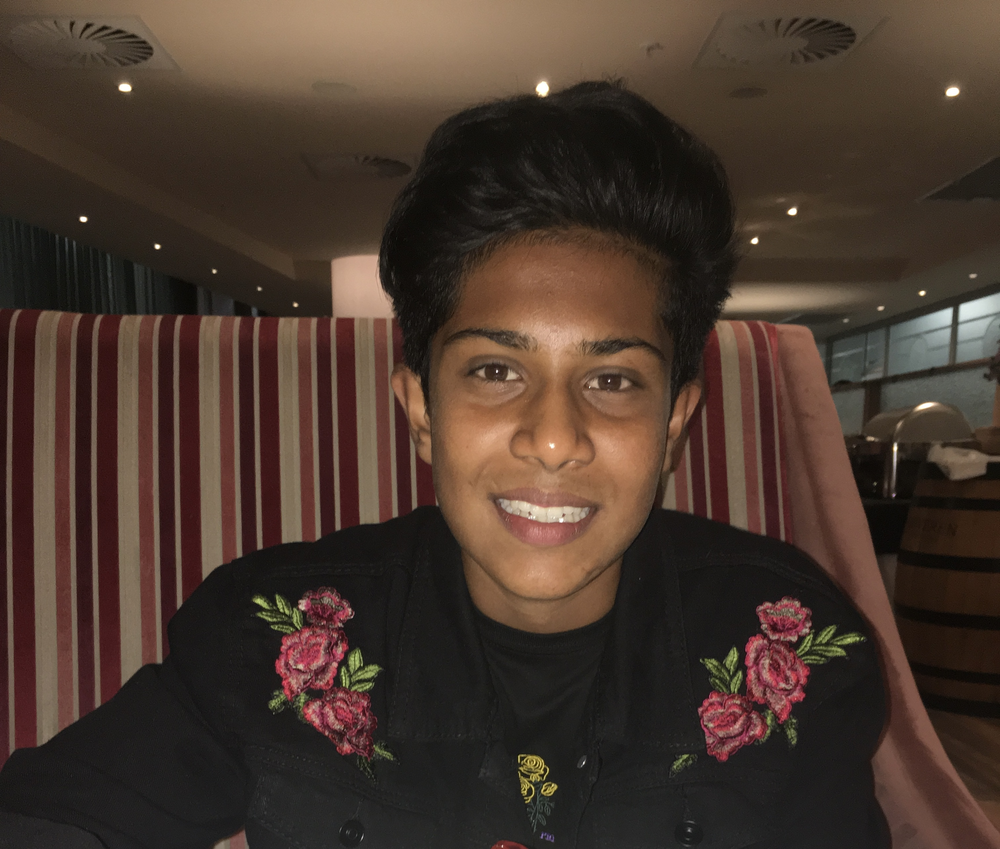

Jared Naicker's Resume

Summary
I’m a driven student in my final year of undergraduate studies. I am a part of the Golden Key Honor Association, which only the top 15% of university students globally are able to join by invitation. I am passionate about people as I believe that I can interact with anyone. I’m someone who enjoys working in a team to achieve a common objective and in times of crisis I take the lead. Easily adaptable to new and changing environments with the ability to learn quickly as well. I possess good listening skills which is a key factor in communication skills and I believe that I can add value to any organization.
Education
- MATRIC, NORTHWOOD BOYS’ HIGH SCHOOL (2020)
- Academic Scroll and a 75% Aggregate with 2A’s (Accounting, Business Studies), 4 B’s (Afrikaans FAL, English HL, Life Orientation, Information Technology) and 1 C (Mathematics Core).
- BCOM (IS), WITS UNIVERSITY (2021-2023)
- WEB DEVELOPMENT COURSE, DR ANGELA YU (2023)
Work Experience
- TUTOR, NT EDUCATION, 2021
- Planned lessons, prepared work activities, tutored remotely via MS Teams. Assisted school pupils in understanding Accounting in an easy and enjoyable manner.
Awards & Achievements
- JUNIOR ACHIEVEMENT MINI ENTERPRISE PROGRAM, CITI BANK AND THE JSE (2019)
- Created a business with other pupils and learnt many skills such as Business Management, Market & Product Research, Financial Management & Control, Pricing & Costing, Sales & Marketing and finally Problem Solving & Decision Making. I was the Junior General Manager of our business in which we won provincial selection to compete against other provinces on a national level. We finished in 2nd place.
- GOLDEN KEY HONOUR SOCIETY (2022)
Skills
- Communication Skills
- Sociable
- Business skills
- Technologically Competent
- Logical Thinker
- Friendly
- Fluent in C#
- Competent in Web Devlopment
Other
Contact Me
My hobbies